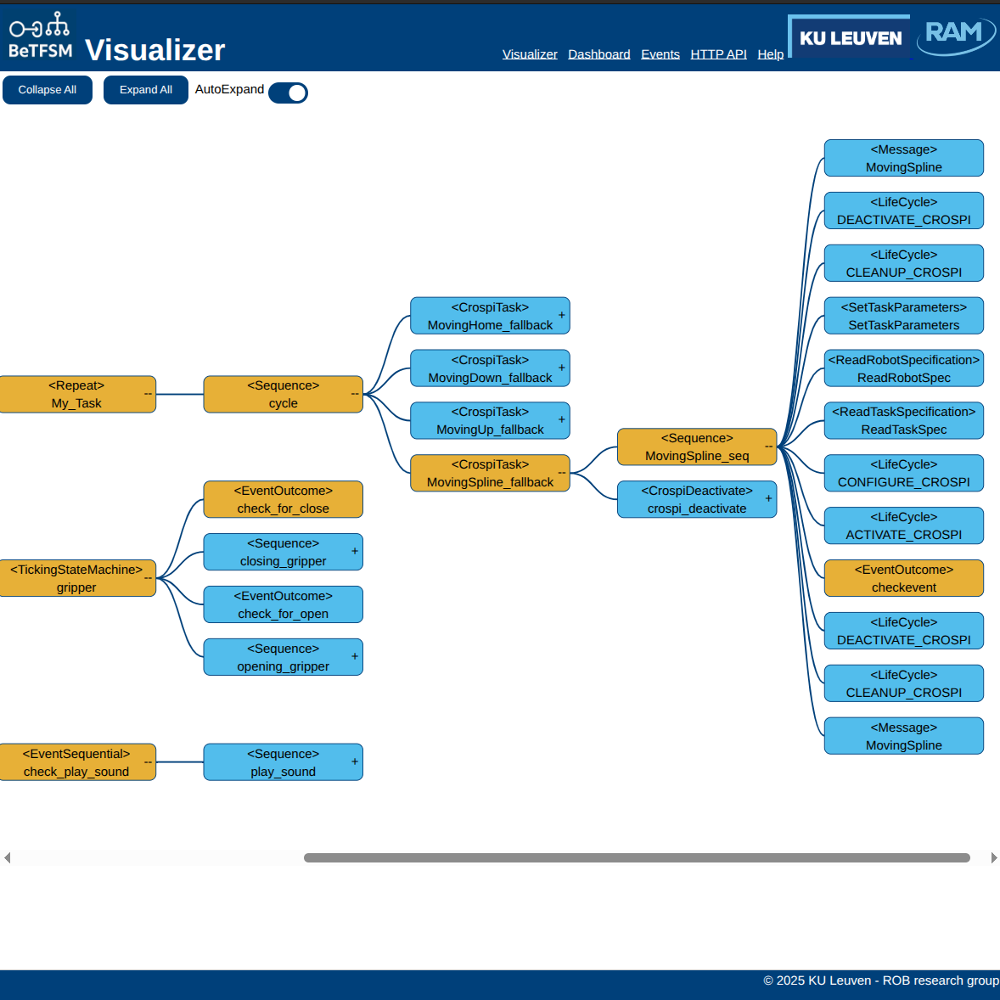

Executing a BeTFSM Tree
This tutorial goes deeper in how we can execute, configure the execution of a BeTFSM tree, add additional debug information and visualize the execution
Running the BeTFSM web-server user interface
Runner or ROSRunner provides a way to execute, a graphical user interface to monitor a BeTFSM-tree, and a way to configure your BeTFSM from the command prompt.
A webserver will be started that serves the graphical user interface at localhost:8000 (it uses 0.0.0.0, so it
remains local and does not serve outside your computer by default).
The console output will provide a link. When you need to run different BeTFSM executions:
- Check whether you could run on the same execution using a Concurrent node.
- Execute it separately and configure the BeTFSM to serve the visualizations on a different web-addres.
Visualization and debugging output happen at the publish_frequency, which is different from the frequency at which the BeTFSM nodes are ticking.
When the BeTFSM execution stops, the front-end page will remain active and will be polling at a slow frequency to ensure that it is possible to stop the BeTFSM execution, and when you later restart, the page and the BeTFSM will find each other again.
You can also use the command-line arguments not to execute, but to generate a .dot file, in GraphViz format, or to generate a .json file that can be used for further analysis of the BeTFSM-tree. Currently the .json format does not contain enough information to reconstruct the BeTFSM tree.
For example to visualize the tree using Graphviz, you could do:
gui_example_simple1 --generate_dot gui_example_simple1.dot
xdot gui_example_simple1.dot
The basic instructions to run your BeTFSM tree are very easy:
sm = build_tree()
runner = Runner(sm,bb, frequency=100.0, publish_frequency=5.0, debug=False, display_active=False)
outcome=runner.run()
This is a full description of how to call the Runner in Python and of the command line arguments to further configure during execution time.
A full example can be found in betfsm/betfsm_examples/guiexample_simple1.py
#!/usr/bin/env python3
import threading
import webbrowser
# ---- building the state machine -----
from betfsm import (
Sequence, ConcurrentSequence, TimedWait, TimedRepeat, Message, SUCCEED, get_logger,Runner
)
# ---------------------------------------
def build_tree():
sm = Sequence("concurrent_sequence_outer", [
Message(msg="This demo uses ConcurrentSequence, Sequence, TimedRepeat"),
Message(msg="--- concurrent_sequence started ---"),
ConcurrentSequence("concurrent_sequence", [
Sequence("sequence1", [
Message(msg=" --- sequence 1 started ---"),
TimedRepeat("timedrepeat1", 5, 5, Message(msg=" sequence 1: 5 times every 5 second")),
Message(msg=" --- sequence 1 ended ---")]),
Sequence("sequence2", [
Message(msg=" --- sequence 2 started ---"),
TimedRepeat("timedrepeat1", 10, 6, Message(msg=" sequence 2: 10 times every 6 second")),
Message(msg=" --- sequence 2 ended ---")]),
Sequence("sequence3", [
TimedWait("waiting 20 sec", 20.0),
Message(msg="I like to interrupt!")]),
]),
Message(msg="--- concurrent_sequence ended ---")
])
return sm
# ---------------------------------------
def main():
bb = {}
sm = build_tree()
runner = Runner(sm,bb, frequency=100.0, publish_frequency=5.0, debug=False, display_active=False)
runner.run()
if __name__ == "__main__":
main()
Other examples are provided in guiexample_simple2.py and guiexample_large.py.
Using the GUI
Go with a webbrowser to localhost:8000 after you have started the BeTFSM server. Once you loaded the page, you can start/stop the server and the page will automatically reload if the server becomes available again (checking every 5 seconds).
The GUI displays a tree representing the BeTFSM tree. The orange nodes are currently active.
In the GUI nodes can be expanded or collapsed by pressing the "-" or "+" ons the right side of each node. You can also expand all nodes or collapse all nodes.
Very handy is the AutoExpand option, this will collapse the tree but expand all nodes that are needed to visualize all active nodes.
The Play button and sliding bar are currently not implemented. Their purpose will be to go back and forward in time using a history of the execution.

Running under ROS2 and cROSpi
TODO
This Section and the later ones still needs to be elaborated
Besides using the ROSRunner class, there is some ROS2 boiler-plate needed to initialize rclpy ROS2 interface, start-up and destroy the ROS2 node, and to shut rclply down afterwards. load_task_list loads a list of task specifications, specified in a configuration file. The eTaSL_StateMachine node communicates with cROSpi to execute the task with the given name:
1 2 3 4 5 6 7 8 9 10 11 12 13 14 15 16 17 18 19 20 21 22 23 24 25 26 27 28 29 30 31 32 33 34 35 36 37 38 39 | |
Handling interruptions
In a real-life robot execution, one needs to be careful to handle all exceptional situations such that the robot system always ends up in a predictable state.
Directly interrupting and cleaning-up
A first solution is to directly interrupting the running state machines and cleaning up afterwards by calling the appropriate service calls to stop the robot.
1 2 3 4 5 6 7 8 9 10 11 12 13 14 15 16 17 18 19 20 21 22 23 24 25 26 27 28 29 30 31 32 33 34 35 36 37 38 39 40 41 42 43 44 45 46 47 48 49 50 51 52 53 54 55 56 57 | |
Directly interrupting and cleaning-up
A second solution is to register the interruption and only react to it at a given state in the state machine. This would allow e.g. a robot to continue until he is in a safe state before stopping.
1 2 3 4 5 6 7 8 9 10 11 12 13 14 15 16 17 18 19 20 21 22 23 24 25 26 27 28 29 30 31 32 33 34 35 36 37 38 39 40 41 42 43 44 45 46 47 48 49 50 51 52 53 54 55 56 57 | |